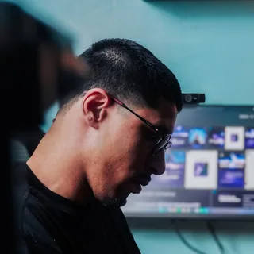
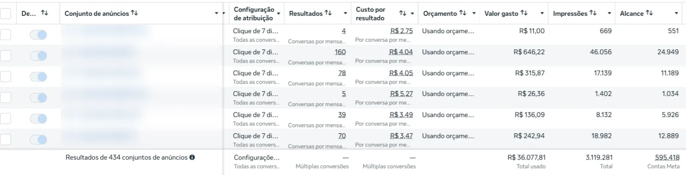
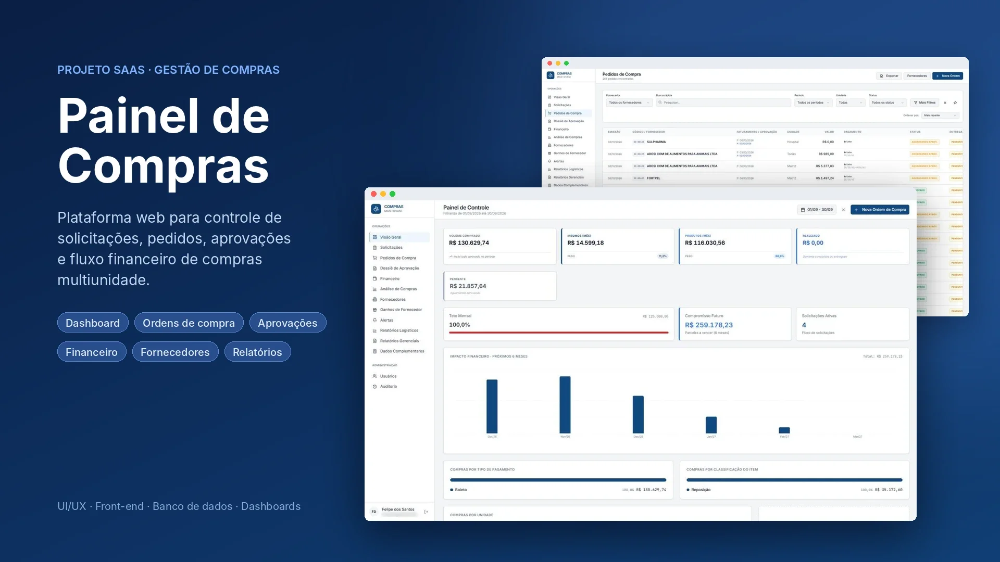

Grupo Axia
Histórias de clientes
Uma série em que os próprios clientes contam como foi a experiência. Quem chega pelo Instagram vê pessoas reais falando do serviço, e isso passa mais confiança do que qualquer anúncio.

deAnúncios, perfil do Google, sites, marca, sistemas e conteúdo para negócios que querem ser encontrados e vender mais.

Perfil do Google e site

Marca e loja virtual

Anúncios no Instagram, Facebook e Google

Sistema sob medida

Site institucional
Vídeo e fotos de evento
Grupo Axia
Uma série em que os próprios clientes contam como foi a experiência. Quem chega pelo Instagram vê pessoas reais falando do serviço, e isso passa mais confiança do que qualquer anúncio.
Santuário Pet
Um passeio pela estrutura do hospital e da loja. Quem ainda não conhece vê como é por dentro antes de visitar, e chega já confiando no lugar.
Gastronomia
Ambiente, equipe e clientes gravados no ritmo do Reels. O vídeo mostra o clima do lugar e dá vontade de estar lá.
Olhamos a presença digital do negócio: o que trava a chegada de clientes e onde está a oportunidade mais rápida.
O primeiro mês é sem fidelidade. A estratégia vai ao ar e você vê os primeiros números antes de assumir compromisso.
A partir do segundo mês, contrato de 6 meses para ajustar anúncios, conteúdo e atendimento até o resultado se repetir todo mês.
Estes são alguns exemplos. Esta página reúne só uma parte dos nossos trabalhos: mostramos os mais parecidos com o seu negócio na conversa.
O próximo passo começa aqui
Responda 10 perguntas rápidas sobre o seu negócio e receba um diagnóstico da sua presença digital. Sem custo e sem compromisso.
Primeiro mês sem fidelidade: você vê os primeiros números antes de assumir compromisso.